Экспозиция
Постоянная экспозиция М’АРТ посвящена художникам, чья жизнь связана с Оренбургом.
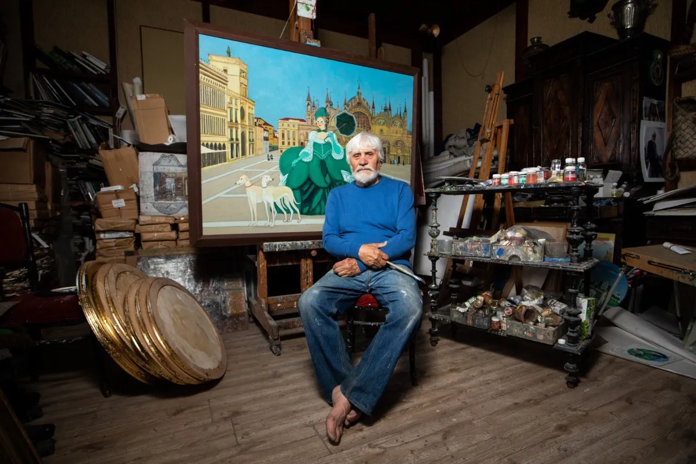
Юрий Рысухин
Оренбургский живописец, заслуженный художник России. Корпус его работ — основа постоянной экспозиции.
Живопись Рысухина — явление уникальное. Свои работы он создаёт в технике «левкас»: это грунт, который кладётся на деревянную основу. Живопись по левкасу уходит корнями в глубокую древность, её использовали в античной, средневековой живописи и в русских иконах. Из-за белизны левкаса краски приобретают особую яркость и выразительность.
В его картинах всё живёт в согласии друг с другом. Рысухин изображает прошлое: на улицах нет электрического освещения и автомобилей, персонажи занимаются сельским хозяйством, выезжают на охоту, веселятся на городских праздниках. Свой творческий путь художник начал в 70-е и стал представителем «другого» искусства — так называли художников, отрицающих штампы в творчестве.
Из орнаментов народной росписи, техники русской иконы и композиционных приёмов северного Возрождения складывается личностный миф Рысухина. Наш современник оказывается продолжателем традиции Брейгеля в размышлениях о месте человека в мире и поиске гармонии с природой.
Работы
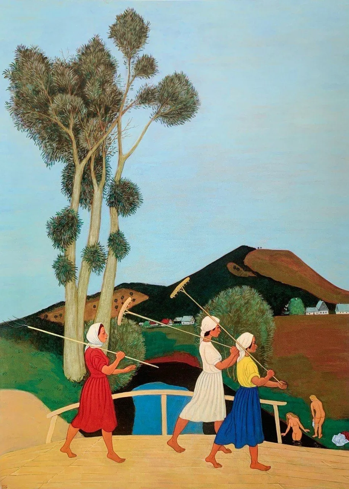
Возвращение с поля2011
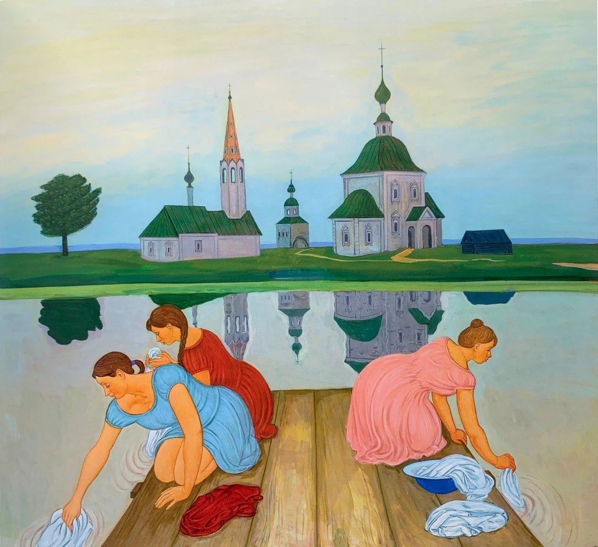
Полоскание белья2012
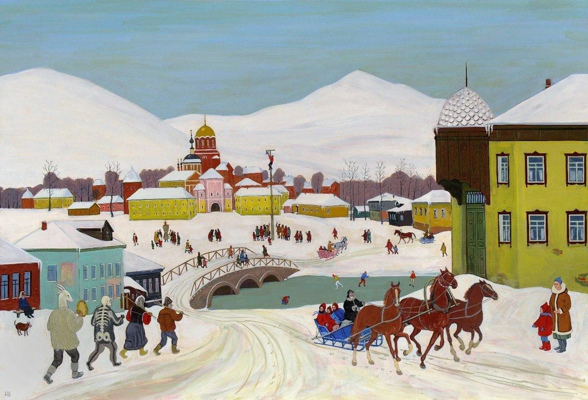
Февраль. Проводы русской зимы2012


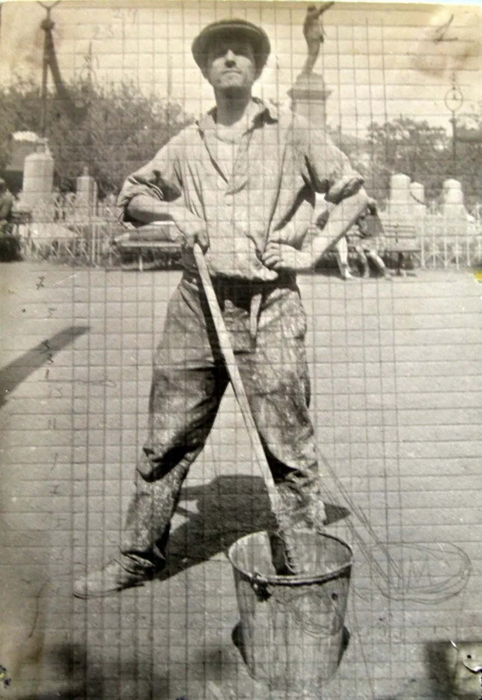
Сергей Калмыков
1891–1967
Художник, философ, мечтатель и новатор. Жил в Оренбурге до 1937 года и называл себя «певцом Оренбурга».
Хотите знать, кто есть я, Сергей Калмыков? Пожалуйста. Художник, философ, автор многочисленных фолиантов, дневников, жизнеописаний, неотправленных писем, посвящений, афоризмов и лирики. … Моя колыбель Азия, Европа и Космос одновременно.
Калмыков родился в Самарканде, но скоро попал в Оренбург. Учился в Москве и Петербурге, а в Оренбурге сформировался как универсальный мастер: живописец, рисовальщик, гравёр, сценограф. В конце 30-х переехал в Алма-Ату, где творил без оглядки на власти и моду, поэтому основной корпус его работ находится в Казахстане.
Записи и графика Калмыкова — исторические документы, которые позволяют прогуляться по улицам Оренбурга сто лет назад. Он часто изображает цирк и странствующих артистов, а Казанский кафедральный собор становится у него символом, сопоставимым с Вавилонской башней. В собрании Оренбургского музея более 100 работ Калмыкова.
Калмыков входил в УНОВИС — объединение К. Малевича, но искал собственный путь. Разбирая его работы, мы увидели здание на Советской, 3: во времена Калмыкова здесь находился Оренбургский техникум земледелия.
Работы
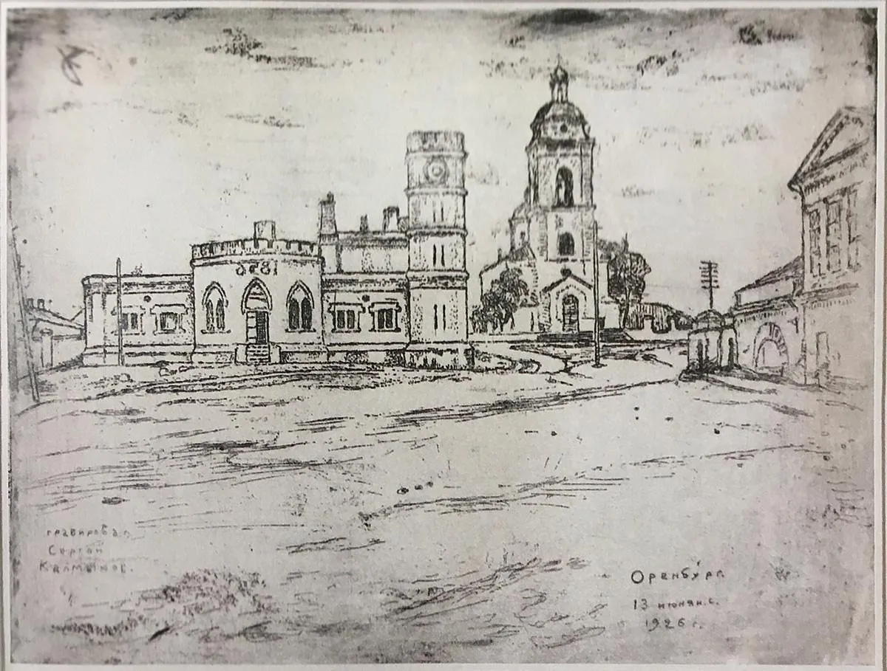
Вид Оренбурга1926
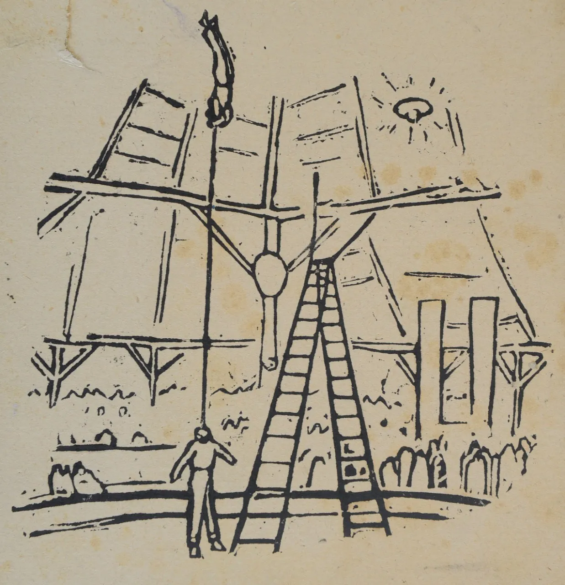
В цирке1920-е
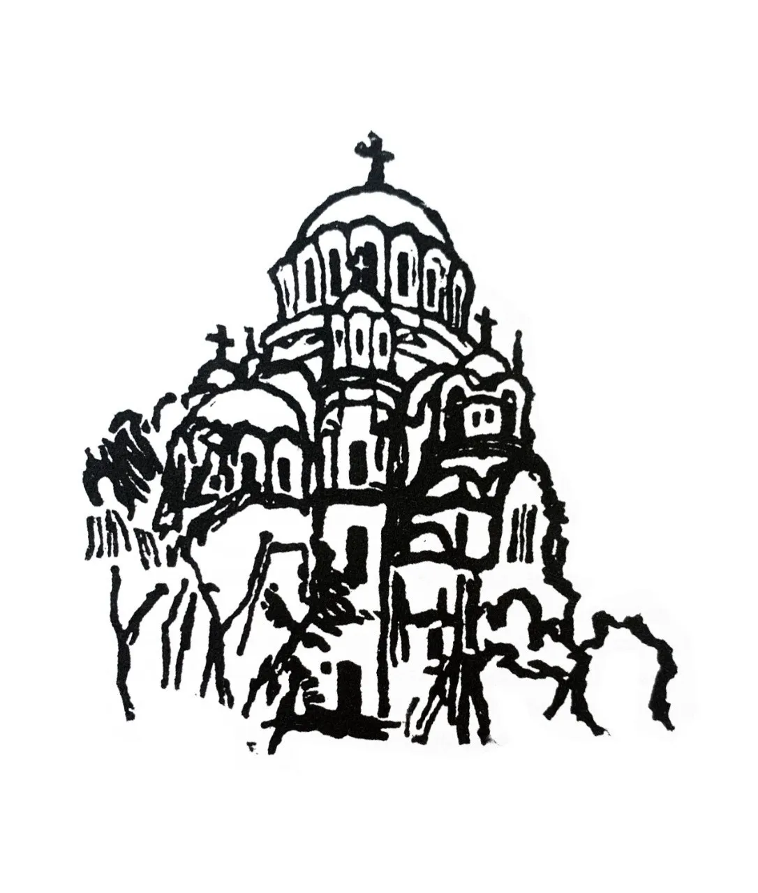
Соборгравюра, 1920-е
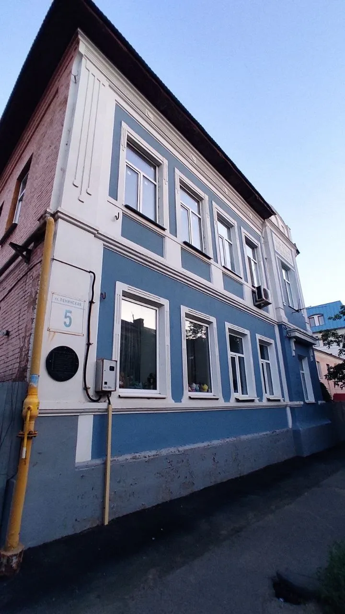
Дом Калмыкова на Ленинской, 5фасад после реставрации «Том Сойер Фест», 2018


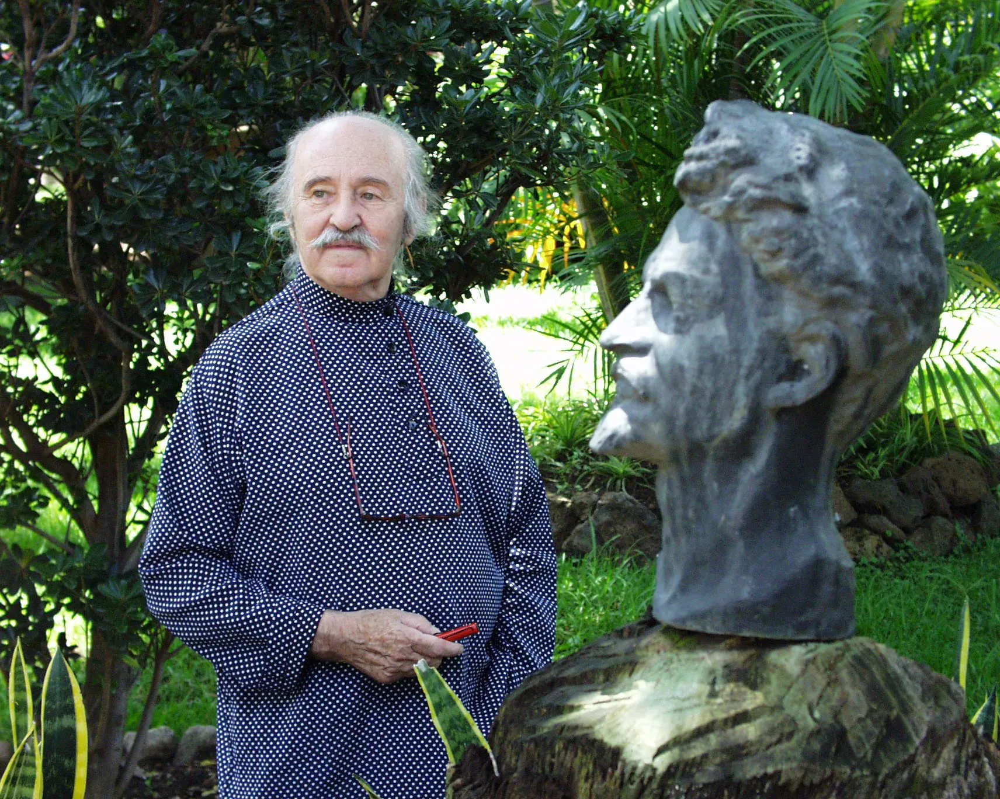
Влади (Владимир Кибальчич)
род. 1920
Российско-французско-мексиканский художник. Подростком жил в Оренбурге в ссылке с отцом, писателем Виктором Сержем.
Влади родился в Петрограде. В 1933 году вместе с отцом попал в ссылку в Оренбург, где семья пробыла до 1936 года, а затем через Бельгию и Францию отправилась в Мексику. Там художник прожил большую часть жизни. Влади — самоучка: его университетами были лучшие музеи и библиотеки мира.
В мире Влади известен как художник-монументалист. Фрески «Революции и элементы» в библиотеке Мигеля Лердо-де-Техады в Мехико занимают 2 000 квадратных метров, на их создание ушло почти десять лет.
Особое место в его творчестве занимает офорт — гравюра на металле, техника Дюрера и Рембрандта. 150 офортов Влади передал в город юности, и М’АРТ разместит эту коллекцию в своих стенах.
Работы
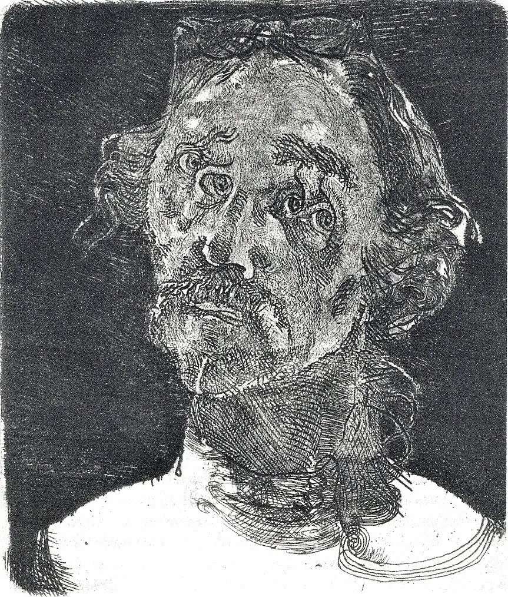
Автопортрет IIбумага, офорт
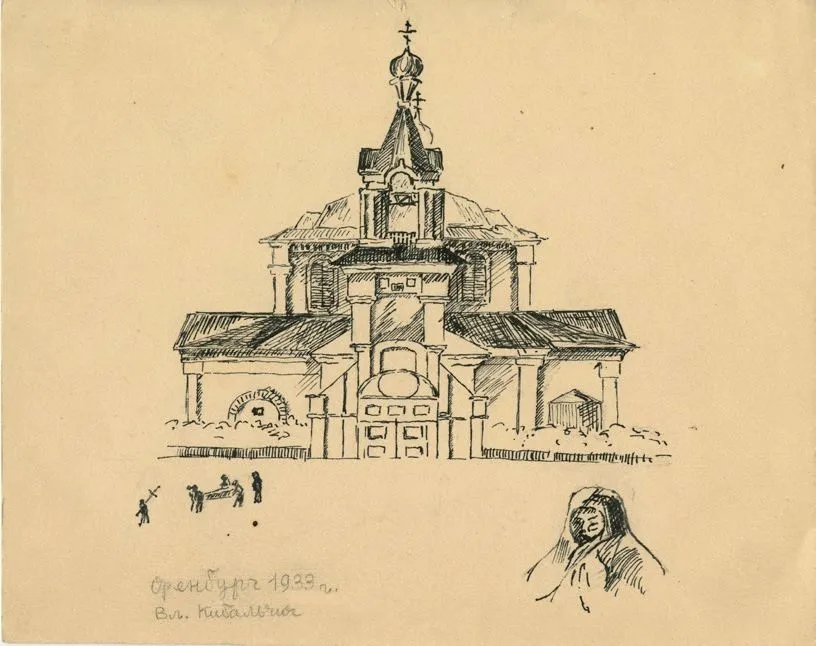
Никольская церковь1933, бумага, тушь
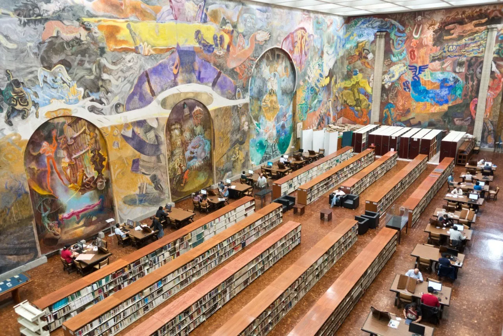
Фрески в библиотеке Мигеля Лердо-де-ТехадыМехико


Залы и билеты
Льготный билет — студенты очной формы, пенсионеры, дети 7–18 лет. Аудиогид +250 ₽. Цены уточняйте по телефону.